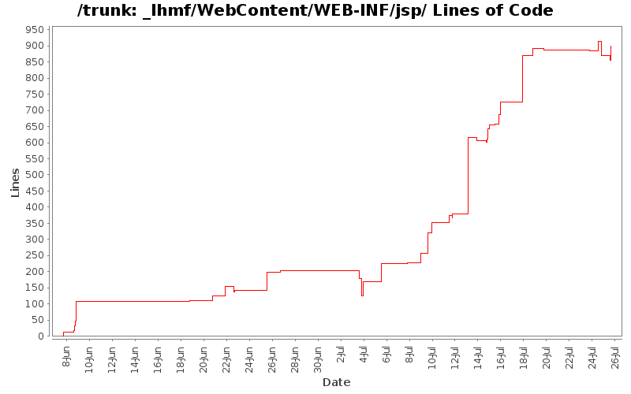

[root]/_lhmf/WebContent/WEB-INF/jsp
 mobile
(1 files, 123 lines)
mobile
(1 files, 123 lines)

| Author | Changes | Lines of Code | Lines per Change |
|---|---|---|---|
| Totals | 94 (100.0%) | 1532 (100.0%) | 16.2 |
| jyxpowa@gmail.com | 30 (31.9%) | 737 (48.1%) | 24.5 |
| francesco.brundu@gmail.com | 40 (42.6%) | 395 (25.8%) | 9.8 |
| l.moretto88@gmail.com | 15 (16.0%) | 308 (20.1%) | 20.5 |
| hasmet87@gmail.com | 9 (9.6%) | 92 (6.0%) | 10.2 |
Tolta annotazione catalog da hibernate mapping; aggiunte classi dimenticare scorso commit
42 lines of code changed in 1 file:
Modifiche dopo l'upgrade del database e aggiunte al controllore delle schede
8 lines of code changed in 1 file:
Creazione prodotto + categoria terminata; da testare
16 lines of code changed in 1 file:
Creato insfrastruttura di presentazione per Responsabile.
66 lines of code changed in 3 files:
1 lines of code changed in 1 file:
Costruzione pagine normal e responsable(inizio)
46 lines of code changed in 2 files:
Modifica pagina jsp utente normale
2 lines of code changed in 1 file:
Sto lavorando sulla lista membri da attivare.
1 lines of code changed in 1 file:
Registrazione Forenitore Completata.
Cose da fare/aggiustare:
- Generare le password ed inviarle all'email.
- Modificare l'authMail affinche attivi anche i suppliers (ora fa solo membri e responsabili)
- Modificare il getMembersRespString in modo che restituisca solo i membri attivati.
1 lines of code changed in 1 file:
Lato client impostato per registrare responsabili e fornitori. Manca lato server. Sarà fatto presto abbiate fede.
24 lines of code changed in 1 file:
Non entra nel metodo ajax/newMember. Non riesco a capire il perchè.
1 lines of code changed in 1 file:
Modificato il controllo ajax per newmember. Sezione admin ancora da finire.
144 lines of code changed in 2 files:
Sistemato parte log Admin.
5 lines of code changed in 1 file:
Puttanate
46 lines of code changed in 4 files:
Added return products table to lib_supplier; modificato poco index_supplier (non è completo)
39 lines of code changed in 1 file:
Tolto il membro checkMail. Cambiato con variabile di sessione
1 lines of code changed in 1 file:
aggiunto controllo account abilitato anche per facebook.
modificato leggermente lo stile della pagina di login.
9 lines of code changed in 1 file:
49 lines of code changed in 2 files:
3 lines of code changed in 3 files:
Creata l'infrastruttura per mandare le mail... ma testare da locale è difficile.
33 lines of code changed in 1 file:
Effettuata anche la registrazione normale. Manca da fare l'invio delle mail.
24 lines of code changed in 2 files:
Aggiunta registrazione facebook. Modificata pagina login.jsp. Aggiunto un permesso per /siognup* su applicationContext-security.xml
21 lines of code changed in 1 file:
Sistemata registrazione per OpenId. Bisogna risolvere il redirect
1 lines of code changed in 1 file:
21 lines of code changed in 1 file:
248 lines of code changed in 2 files:
Modificati Controlli alla registrazione e relativa grafica.
43 lines of code changed in 1 file:
3 lines of code changed in 1 file:
0 lines of code changed in 2 files:
Piccole aggiunte agli utenti normali e responsabile
34 lines of code changed in 2 files:
Added few fields in signup view, + comments
31 lines of code changed in 1 file:
migliorie pagina di login
71 lines of code changed in 1 file:
FUNZIONANO GLI OPENID!!!!! (tipo google, e parecchi altri...) per proivare con google scrivere nella casella di testo "Identity" questo url "https://www.google.com/accounts/o8/id" e vedrete la magia!
Al momento però gli openid non vengono registrati, quindi non fa effettivamente il login...
IMPORTANTE: dato che l'app sta diventando pesantina a causa delle librerie, ho dovuto modificare i parametri della VM di tomcat. Lo potete fare da eclipse andando a modificare la configurazione di avvio del programma, e aggiungendo ai parametri della VM
questa cosa:
-XX:PermSize=256m -XX:MaxPermSize=256m -XX:+DisableExplicitGC
30 lines of code changed in 1 file:
about to do the spring revolution!!!
-aggiunte librerie per spring security
-aggiunto username in index.tag
-aggiunto uso di spring:url al posto degli url normali nei file jsp
-commentato intero contenuto di HibernateFilter, dovrà sparire
-aggiunti file XML per creazione contesto applicativo
12 lines of code changed in 2 files:
Added deserializer: WARNING it does not work yet, do not revert to this revision unless you want to debug ProductDeserializer.java
5 lines of code changed in 1 file:
inizio gestione history su ie (non ha le api...) Soluzione: usare history solo per browser html5, per quelli html4 fare normali richieste al server (esempio: verificare parametri per richieste log su ie)
59 lines of code changed in 3 files:
1 lines of code changed in 1 file:
migliorata gestione history. Adesso funzionano back, forward, reload e segnalibri.
44 lines of code changed in 1 file:
-inizio uso history (con la libreria jquery.history.js di History.js https://github.com/balupton/history.js)
-aggiunta librearia modernizer js (potrebbe servirci in futuro)
11 lines of code changed in 1 file:
Refactored HibernateInterface, now it is distributed in several file <name>Interface for every hibernate mapping, under model package
3 lines of code changed in 1 file:
-fixata query per ottenimento log. usa Timestamp e 'between ... and ...'
-creato ObjectMapper customizzato (CustomObjectMapper.java) per serializzazione custom json di Member. Usare questa classe per imostare serializzatori custom per eventuali altre classi (se le classi hanno loop di dipendenze la serializzazione crasha, quindi bisogna scegliere bene cosa serializzare e cosa no)
-modificato lhmf-servlet.xml per impostare ObjectMapper customizzato per la serializzazione degli oggetti hibernate
-aggiunto controllo in AjaxController che, se arriva richiesta per i log, l'utente loggato sia di tipo admin (3)
10 lines of code changed in 1 file:
(19 more)